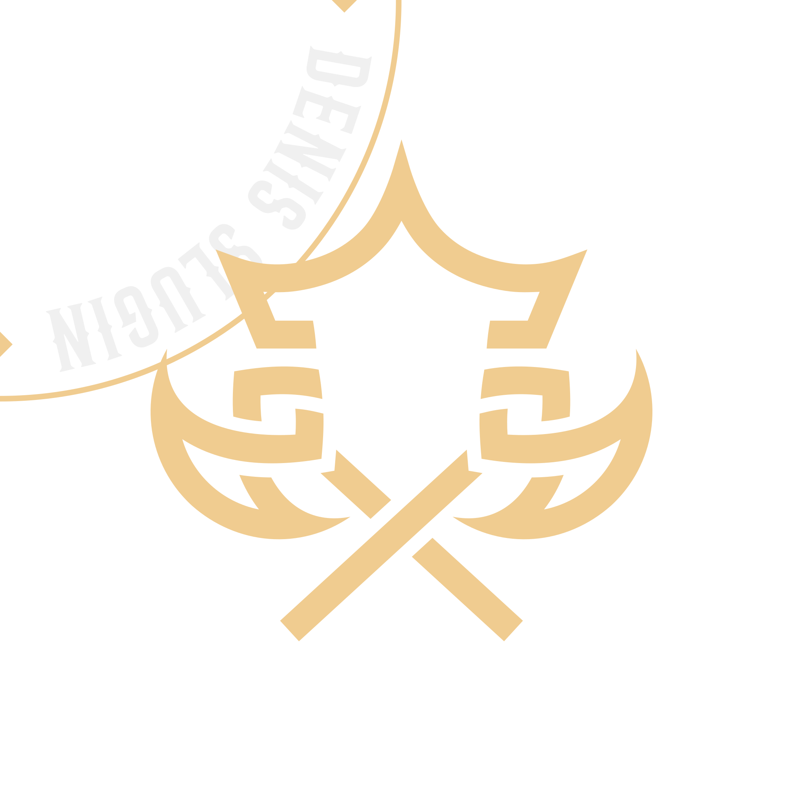

О проекте
Savage - это дизайн студия в удалённом формате, разрабатывающая дерзкие решения, которые продвигают бренды, бизнес и продукты.
Брендинг является основным направлением этого проекта, тебя ждёт огромный выбор как цифровой, так и печатной продукции.
Открой полные каталоги продукции, с подробностями, расчётами стоимости и сроками разработки: